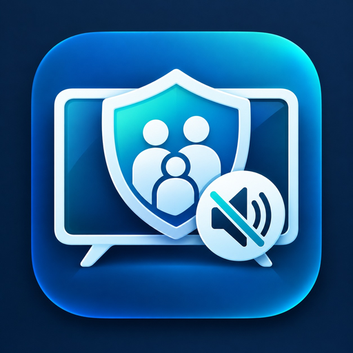

Automatically mute profanity on your Android TV.
Family Filter TV automatically mutes unwanted language on Android TV and TV boxes while the picture keeps playing. It works with Stremio and follows along with Netflix and other apps on Android TV, and you choose how strict the household filter should be from your phone.

Nothing is cut, blurred or skipped. The picture carries on and the sound comes straight back.
Watch the 30-second video: a real film line, with the one word muted.
Looking for a TV profanity filter?
Start with the guide that matches what you want to do. These pages explain the supported Android TV, Stremio and follow-along workflows.
- Profanity filter for Android TV — what it does, what you need and the current limits.
- Stremio profanity filter — how to watch with automatic language filtering on Android TV.
- How to mute swearing on TV — what the viewing experience looks like when language is filtered.
- How to mute swearing on Netflix — the steps for Android TV and Google TV, and what to expect.
- How the filtering actually works — and what it can't do, on Android TV.
- VidAngel and ClearPlay alternative — a fair comparison for Stremio and Android TV households.
- Title-by-title family viewing guides — language level and filtering data for specific films, drawn from our own subtitle analysis.
What it works with
Family Filter TV works with supported Stremio playback on Android TV and Android TV boxes, and it can follow along while you watch Netflix and other apps on your Android TV.
- Stremio on Android TV and TV boxes is supported today.
- Netflix and other apps on your Android TV: pick the title on your phone and Family Filter TV mutes the swearing on the TV while you watch. Needs Family Filter TV on an Android TV or Google TV device and on an Android phone. English titles only for now. It does not work with the built-in apps of Samsung, LG and other non-Android TVs. Needs version 0.2.21 or newer: if Google Play still offers an older version, install from the download page.
- Windows PCs have an early-beta companion that mutes the computer's sound for anything you watch in a browser or an app.
- Family Filter TV is not a streaming library and does not provide films, series or subscription access.
- Filtering availability can vary by title; the app tells you when filtering is unavailable.
- It filters profanity in speech. Violence and nudity are not currently filtered.
Watching on a Windows PC?
Family Filter TV now has an early-beta companion for Windows. It links to your household the same way a TV does — type the short code into the phone app — and mutes the computer's sound while a flagged word is spoken, for whatever you're watching in a browser or an app. You still pick the show and set the filter from your phone.
- Windows 10 or 11. Installs for your user only, no admin prompt.
- A PC counts as one of your household's devices, on the same subscription as your TVs.
- It's an early beta — it checks the sound every couple of seconds, so help us test it and tell us what to fix.
How it works
-
Put it on the television
Install Family Filter TV on your Android TV or TV box, and on your phone as well, then sign in with Google or an email address.
-
Link the TV from your phone
The TV shows a short code. Open Family Filter TV on your phone, tap Link a TV and type the code in.
-
Start watching
Start a title in Stremio and choose Family Filter TV for playback. Pick how strict the filter should be — off, mild, family or strict.
The full walkthrough covers installation, linking your TV and the few settings needed before you start watching.
One filter for the whole house
The filter belongs to the household, not to the device. Set it once on your phone and every television linked to your account follows — the one in the lounge, the one in the spare room, the one the children are watching while you are in the kitchen.
- Choose off, mild, family or strict on your phone; the televisions pick it up.
- Link a television by typing in the short code it shows on screen. That is the whole setup.
- Three devices are included on one account, and you can add up to six.
- Nobody has to fetch a computer, cast anything, or change a setting on the TV itself.
What it costs
US$14.99 a year
Launch offer
50% off your first year
- 137 of 200 seats left at this price in South Africa.
- R125 for your first year, then R250 a year. 14-day free trial first.
- Next 200: 40% off. Then 30%, 20%, 10%, and full price after that.
- Ends 31 December 2026.
- The first 14 days are free.
- Three devices on one account, and up to six if you need them.
- A 4th, 5th or 6th device adds US$3.09, US$5.99 or US$8.99 a year.
- Android TVs, Android TV boxes and Android phones.
- Google Play shows and charges the price in your own currency.
- Prices are Google Play's listed prices for the United States; the final amount is confirmed at checkout.
- Launch discounts apply to the first year only; the subscription renews at the full price shown above.
Invite a friend
Every friend who subscribes through your link earns you 10 weeks free. Five friends is a free year, and there's no cap after that — a hundred friends is twenty years, credited a year at a time. No friend's link handy? The code FREE26 gets you in free until 31 December 2026, no card needed, then a special price.
- Your friend gets 30 days free instead of the usual 14, then pays their own subscription — the launch price, while it lasts.
- Credit lands on your account 3 days after your friend's first payment.
- Your link is on the Invite a friend screen in the app, once you've set up your own account. How inviting works.
- Enter FREE26 as your invite code when you sign in — no card needed.
Questions
What happens if a title has no subtitles?
Filtering availability varies by title. Family Filter TV tells you on screen when filtering is unavailable.
Does it cut or skip anything?
No. Only the sound drops, and only for the length of that line.
Which devices does it run on?
The television itself — Android TVs and TV boxes — and Android phones. A few TV boxes don't offer the Play Store at all; install it directly on those. There's also an early-beta companion for Windows PCs.
What does it play?
Nothing itself. It filters supported playback you start in Stremio, and it can follow along while you watch Netflix and other apps on your Android TV. Family Filter TV is not a streaming library and does not provide access to subscription services.
Does it work with Netflix?
Yes, on Android TV and Google TV. Start the episode or film in Netflix on the TV, pick the same title in Family Filter TV on your phone, and the TV mutes the swearing as you watch. When the TV cannot tell where you are in the film, the phone can find the place by listening; the sound is turned into words on the phone only and is never stored or sent. See the quick start. Family Filter TV is not affiliated with Netflix.
Does it do anything about violence or nudity?
No. It mutes swearing in speech and nothing else. Nothing is blurred, cut or skipped.
Is there a launch discount?
It starts 1 October 2026. The first 200 subscribers in South Africa and the first 200 elsewhere get 50% off their first year, stepping down to 40%, 30%, 20% and 10% as each group of 200 fills, until 31 December 2026. After that it's the full price.
How does inviting a friend work?
Every friend who subscribes through your link earns you 10 weeks free, credited 3 days after their first payment. Five friends is a free year, and there's no cap after that. Your friend gets 30 days free instead of the usual 14 and pays their own subscription, at the launch price while it lasts.
Will it work on my TV?
It depends on the system your TV runs, not the brand. If your TV has the Google Play Store, yes. Which TVs has the brand-by-brand answer.
Something isn't working.
Support has the setup steps, the known limits, and an address to write to.